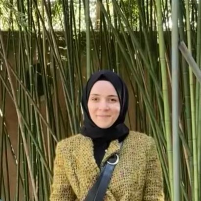

Summary
I have 5 years of experience in Informa/on Technology field as So9ware Developer. I have closely worked with product owners and development team in IT field.
I have experienced about so9ware development life cycle from beginning to end.
Education
Kocaeli University
- B.S. in Computer Engineering (GPA: 3.28/4.00)
Work Experience
Freelance Project
- Completed front-end related tasks such as adding components to E-Commerce Web Site, changing UI styles of component in an open source software built based on React, Typescript, and Graphql
- Did manual test for screens
Kuveyt Turk Participation Bank
- Implemented and deployed parametric structure for Card Screens built with ASP.NET. Users can update the values (card images, card texts etc.) of card elements without deployment.
- Developed various Internet Branch screens (Accounts, Finance Manager etc. ) with ASP.NET., HTML, CSS, JavaScript.
- Developed service methods for all channels (Internet Branch, Mobile Branch and Call Center)
- Reported usage of the channels with Microsoft Power BI Tools and developed views in SQL.
Developed back office screens in BOA (native banking application of the bank) with C#. Provided digital channel customers requests management through BOA screens.
Skills & Awards
- Produced the most content on IT portal about Internet Banking App of Kuveyt Turk Participation Bank
- Outperforming Employee Award grade for 4 times in Kuveyt Turk Participation Bank
- Rewarded with hitting 10% each term at university
Hobbies